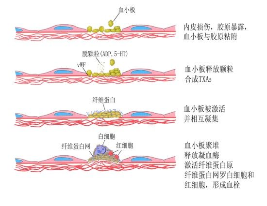
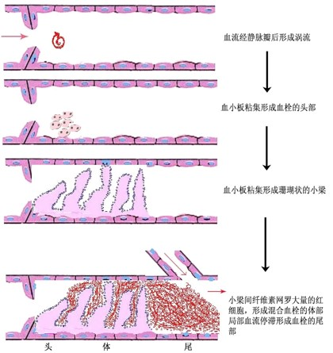

原因：细小动脉扩张
生理性充血：进食后胃肠道充血；运动时骨骼肌充血；阴茎勃起
病理性充血：炎性充血（炎症早期，致炎因素刺激引起轴突反射和炎症介质释放导致细动脉充血）；减压后充血（受压的局部器官或组织突然解除其所受压力，细动脉发生反射性扩张并充血）
形态变化：组织、器官变大；颜色鲜红；温度升高
后果：解除病因→可完全恢复；高血压或动脉硬化等→破裂性出血（如脑出血）；减压后充血→脑相对缺血→虚脱、晕厥
原因：
变化：大体上组织、器官肿大，颜色暗红（发绀），局部血停滞，毛细血管扩张，散热增加；镜下小静脉和毛细血管扩张，充满红细胞，间质水肿，可伴漏出性出血
肺淤血：
病因：左心衰竭→肺静脉回流障碍
形态：大体上肺体积肿胀饱满，暗红色，挤压切面流出淡红色泡沫状液体；镜下肺泡壁毛细血管扩张；肺泡壁变厚、肺泡间隔水肿；肺泡腔内有水肿液、（漏出性）出血；可见心衰细胞（含铁血黄素的巨噬细胞）；纤维化（多见于慢性）
临床：呼吸困难，紫绀，咯血，泡沫痰，水泡音
后果：长期淤血→纤维化，变硬，含铁血黄素沉积→肺褐色硬变
肝淤血：
病因：右心衰竭 肝静脉回流受阻
形态：大体上肝体积增大、色暗红（急性），淤血与脂变共存、红黄相间、槟榔肝（慢性）；镜下中央静脉及肝窦扩张淤血、小叶外围脂变（急性），病变较急性肝淤血更明显、可有纤维增生（慢性）
临床：肝大、肝区压疼、肝功能下降
后果：长期慢性肝淤血→淤血性肝硬化，塌陷的网状纤维胶原化，肝窦储脂细胞增生合成胶原，汇管区纤维增生
概念：在活体的心脏和血管内，血液发生凝固或血液中某些有形成分凝聚形成固体质块的过程叫血栓形成，形成的骨块叫血栓
血栓形成条件：
心血管内皮细胞的损伤：
心血管内皮损伤→内皮下胶原暴露，血小板凝集，凝血系统激活→触发血栓形成

血流状态的改变：
血流缓慢或有涡流形成，轴流破坏→血小板进入边流，易黏附于内膜；涡流产生的从国际可损伤血管内皮细胞，促使血栓形成
血液凝固性增高
血栓形成过程：

血栓类型：
血栓结局：
血栓对机体影响：
有利：溃疡病出血时止血
不利：
血管内出现不溶于血液的异常物质，随血流运行阻塞血管腔的现象称为栓塞。阻塞血管的异常物质称为栓子，最常见者为血栓。
栓子的运行途径：
栓塞类型：
血栓栓塞：
气体栓塞：
羊水栓塞：剧烈宫缩→羊水(角化上皮、胎毛、胎粪、粘液)入血→栓塞
脂肪栓塞：多来源于长骨骨折、脂肪组织严重挫伤和烧伤。脂滴少量时可被吞噬细胞吸收；进入肺血管，使血管壁通透性增高，引起肺水肿、肺出血，较多时影响气体交换，导致窒息或急性右心衰竭
其他栓塞：癌细胞栓塞，寄生虫、细菌栓塞
器官或局部组织由于血管阻塞、血流停止而引起的坏死称为梗死。
梗死的原因：
梗死的条件：
供血血管的类型：
局部组织对缺血的敏感程度
梗死类型：
梗死对机体的影响：
梗死结局：